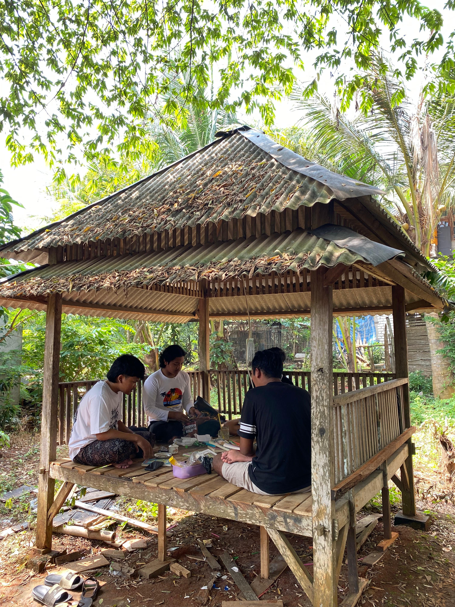
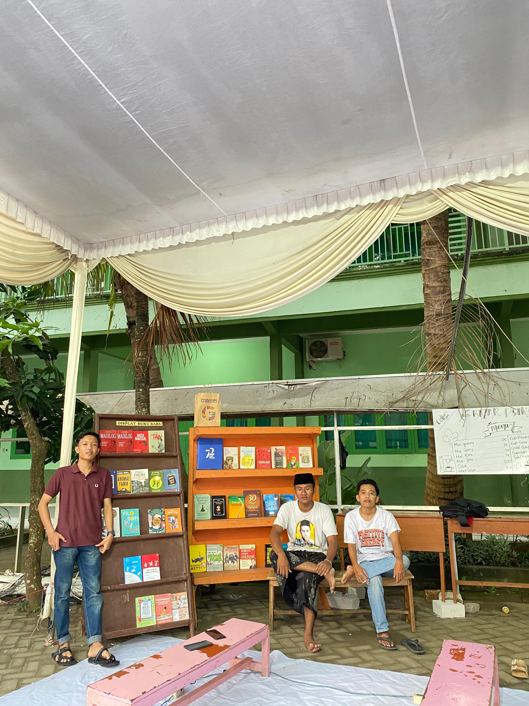
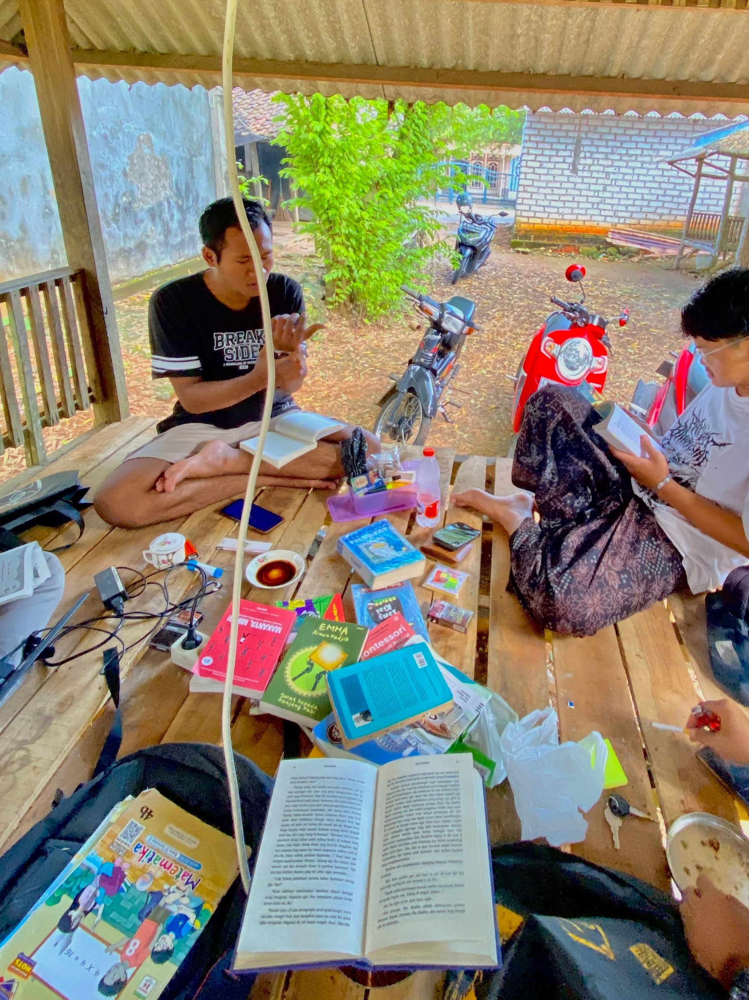

Paguyuban Literasi Dharma
Merawat nalar, menumbuhkan makna
Ruang intelektual bagi pemuda
untuk membaca realitas,
menulis gagasan,
dan merawat kesadaran kritis
melalui literasi.
Kata-kata Inspiratif
"Bila kaum muda terpelajar merasa dirinya terlalu tinggi untuk berbaur dengan masyarakat, maka lebih baik pendidikan itu tidak pernah ada."
"Masa terbaik dalam hidup seseorang adalah masa ia dapat menggunakan kebebasan yang telah direbutnya sendiri."
"Kata-kata orang bodoh kalau kumpul itu ngomongin orang lain, kalau orang biasa ngomongin kejadian, dan kalau orang pintar ngomongin ide."



Tentang Paguyuban Literasi Dharma
Lahir dari keresahan akan minimnya skor literasi di negara yang mentargetkan Indonesia Emas 2045, dan dari kesadaran akan pentingnya literasi dan berdialektika. Dengan ber-ideologi “Mekarlah dimanapun kamu berada”, kami memulai dari lingkungan sederhana, lingkungan yang masih tabu akan membaca di tempat umum.
Tepat pada Hari Pancasila, 1 Juni 2025, sekumpulan orang bodoh berkumpul untuk belajar membaca, mengolah informasi, menganalisa, berpikir kritis, dan berbicara. Disertai fondasi sinau bareng ala Emha Ainun Nadjib: “Kenapa sinau bareng? Karena kita saling membutuhkan, tidak semua orang menanam padi, tapi hampir semua orang memakan nasi.”
Soekarno berkata: “Aku lebih suka pemuda yang minum kopi sambil merokok dan memikirkan bangsa ini, daripada pemuda kutu buku yang memikirkan dirinya sendiri.” Pernyataan ini kami satukan dengan prinsip membaca, berpikir, dan berdiskusi.
Kegiatan ini mengumpulkan orang bodoh, bermodalkan ٱهۡدِنَا ٱلصِّرَ ٰطَ ٱلۡمُسۡتَقِیمَ, membicarakan isi buku, podcast, film, opini suatu kejadian, dll. Paguyuban ini tidak hanya tentang buku, kami menerima ilmu dari segala hal.
Tujuannya: mencari kepuasan kebutuhan yang belum terpenuhi, mengasah kemanusiaan yang membedakan manusia dengan hewan, menunaikan ibadah membaca dan berpikir, menjaga tradisi membaca, dan menjaga kewarasan di tengah pandemi bigbang media sosial.
Per-hari ini, paguyuban belum mewakili instansi pendidikan manapun. Paguyuban adalah kelompok sosial berbasis ikatan batin kuat: kebersamaan, solidaritas, dan persaudaraan. Literasi kami pahami sebagai kemampuan membaca, menulis, berbicara, menghitung, mengolah informasi, dan memecahkan masalah. Dharma merujuk pada cara segala sesuatu berjalan. Kalian bebas menafsirkan makna paguyuban ini.
Akhirul kalam: Jika membaca adalah perlawanan, mari kita bergerilya.
Tradisi Intelektual
Merawat kebiasaan membaca, berdiskusi, dan menulis sebagai jalan pembebasan nalar.
Kesadaran Sosial
Menautkan ilmu dengan realitas sosial, hukum, politik, dan kebudayaan.
Etika & Refleksi
Menjaga kritik tetap berakar pada nilai kemanusiaan dan kebijaksanaan.